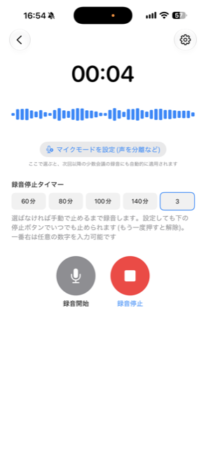
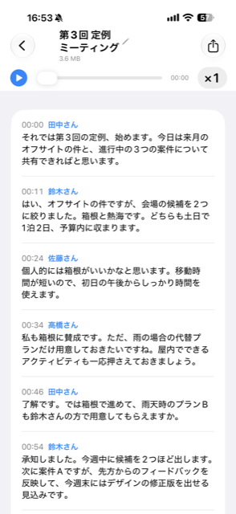
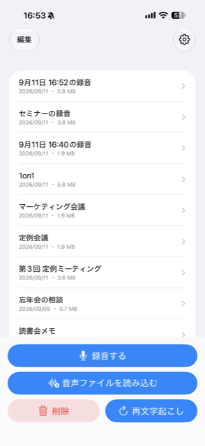
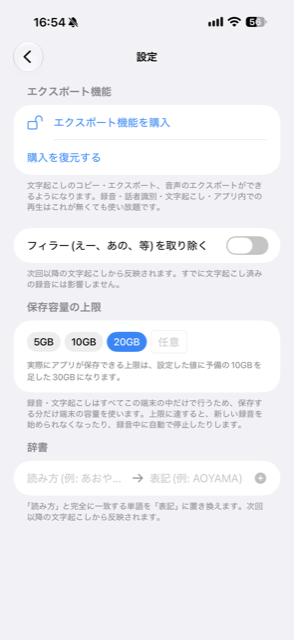

2〜5人ほどの少人数の会話を、話者ごとに正確に分けて文字起こしするアプリです。 誰が何を話したかを文字起こしし、生成AIに読み込ませる素材として そのまま活用できます。




録音・話者識別・文字起こし・アプリ内での再生は、保存容量が許す限り無料でお使いいただけます。 文字起こしのコピー・書き出しや音声の書き出しは有料版の機能です。
録音の中から話者ごとの発言をまとめ、「Aさん」「Bさん」のように分けて表示します。あとから名前を付け直すこともできます。
録音の再生・話者の聞き分け・文字起こしは、すべてこの端末の中だけで行います。音声や文字起こしの内容が外部のサーバーへ送られることはありません。（初回のみ、話者識別に使う機能のデータを取得するため通信します）
読み方と表記をあらかじめ登録しておくと、次回以降の文字起こしに反映されます。
この端末にどれだけ保存するかの上限を、あとからいつでも変更できます。上限に達すると、起動時にお知らせします。
発言をタップすると、その場所から再生できます。読んでいる単語がハイライトされ、文字起こしされていない区間は自動で読み飛ばします。
文字起こしのコピー・書き出しや、音声ファイルの書き出しができるようになります。話者ごとに整理された文字起こしを、生成AIに読み込ませる素材として、そのまま活用できます。
詳しくは プライバシーポリシー をご覧ください。
ご質問・ご要望は下記のメールアドレスまでお願いします。